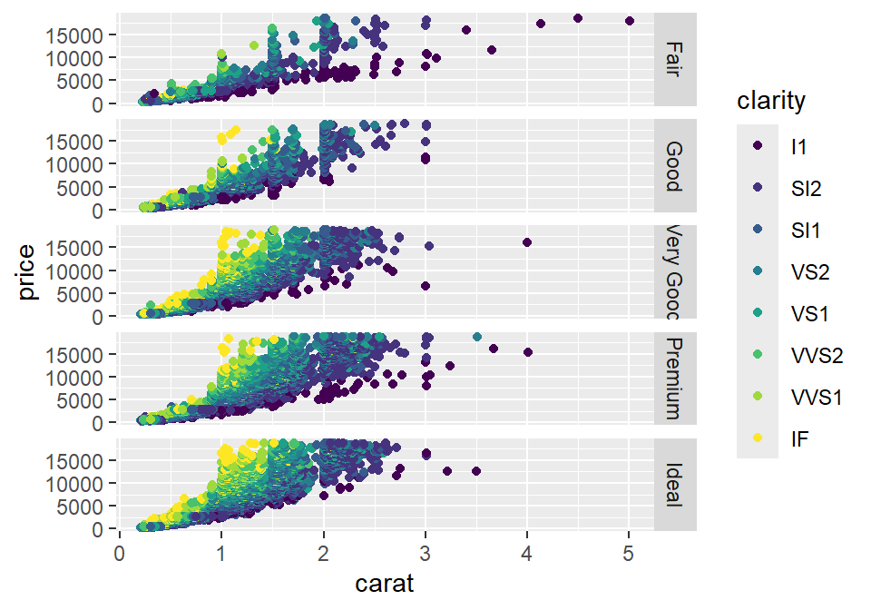
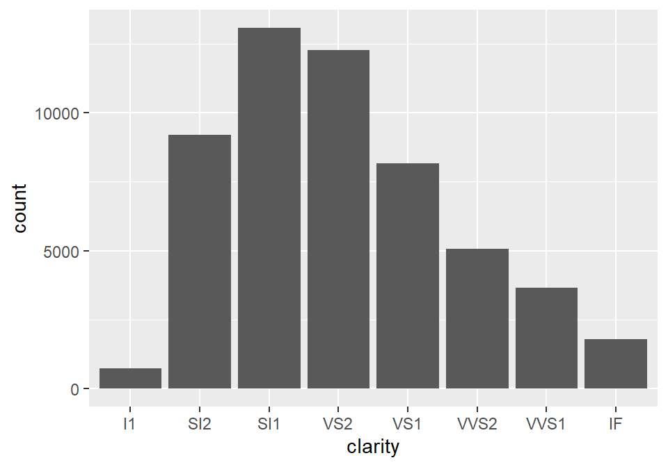
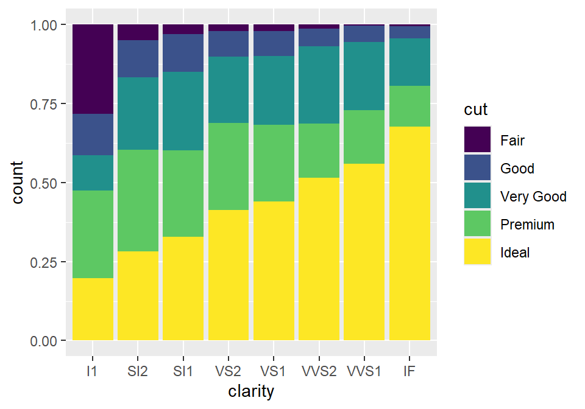
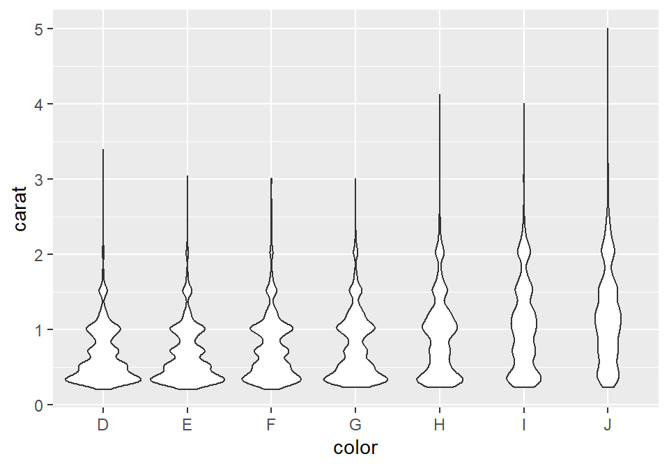
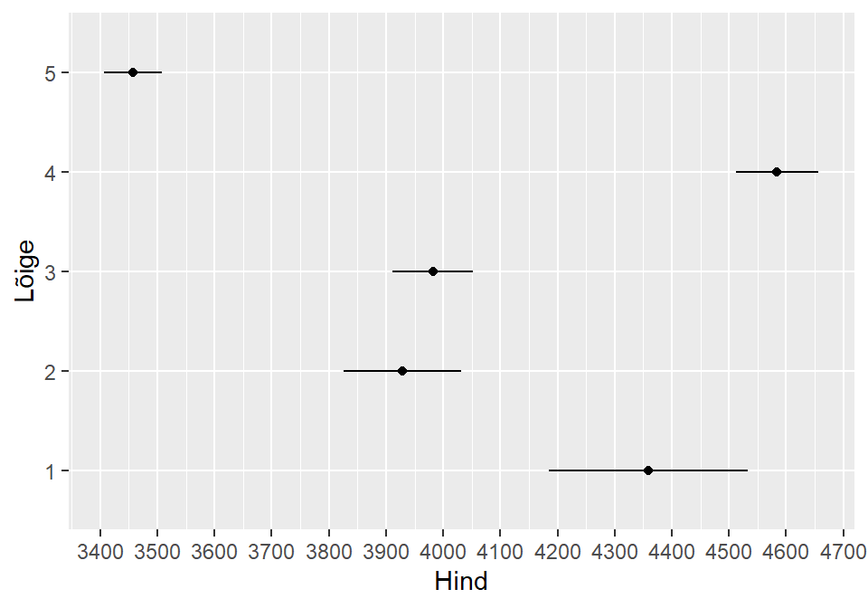

Peatükk 40 ggplot2
ggplot’i lähtekohaks on Leland Wilkinsoni graafika grammatika, mis lähtub põhimõttest, et graafiku võib lahutada eraldiseisvateks komponentideks ja neist komponentidest saab saab uusi tervikuid ehitada. > “… the grammar tells us that a statistical graphic is a mapping from data to > aesthetic attributes (colour, shape, size) of geometric objects (points, > lines, bars). The plot may also contain statistical transformations of the data > and is drawn on a specific coordinate system. Facetting can be used to generate > the same plot for diferent subsets of the dataset. It is the combination of these > independent components that make up a graphic.” > (Hadley Wickham, “ggplot2: Elegant Graphics for Data Analysis”)
40.1 ggploti elemendid
data: andmed. Üldiselt peaks olema dataframe kujulgeom: geomeetriline objekt, mille läbi me oma anmdeid esitame (punktid, jooned, tulbad jne)aes: aesthetic ehk siis kuidas ja mille läbi me oma andmeid geomeetriliste objektidega suhestame (mis on x ja y telg, värv, kuju, suurus). Need on joonise objektide visuaalsed omadusedfacet: tahud ehk kuidas joonist alamosadeks (tahkudeks) jagadastat: milliseid statistilisi transformatsioone on vaja kasutadascales: kuidas andmete reaalsed väärtused joonise väärtusteks tõlgendataksecoord: mis koordinaatsüsteemi kasutada. Üldiseltcartesianpositsion: andmeobjektide positsioonide nihutamineguides: teljed, legendid jnetheme: joonise üldine kujundus (kus asub legend, mis värvi on tagapõhi jne)
Installime ggplot’i (kui me seda jua teinud ei ole) ja laadime selleks sessiooniks. Üritame teha regressioonijoontega scatterploti.
#install.packages("ggplot2")
library(ggplot2)
dt <- iris
names(dt) <- tolower(names(dt))40.2 Scatterplot
Kõigepealt ggploti peafunktsioon, kus märgime andmestiku (tegelikult võime seda teha ka geom’i sees). Seejärel lisame geom’i kihi. Liidame selle peafunktsioonile otsa (kasutatdes + märki). Tahame punktdiagrammi, seega geom_point (et saada aimu erinevatest võimalikest geom’idest, võib uurida ggplot’i kodulehte https://ggplot2.tidyverse.org/reference/ või cheatsheet’i (Help > Cheatsheets > Data visualization with ggplot2)). Defineerime aesthetic’u ehk siis mapime tunnused x ja y teljele.
ggplot(data=dt)+
geom_point(mapping = aes(x=sepal.width, y=sepal.length))
Tegelikult ei pea argumente välja kirjutama, vaid järjekord on tähtis. Saab ka nii:
ggplot(dt)+
geom_point(aes(sepal.width, sepal.length))Tahame erinevad iirise liigid erinevate värvidega grupeerida. Kuna me tahame määrata seda, kuidas andmeid esitatakse (tunnuseid graafikule mapitakse), peame seda tegema aes’i argumendi sees.
ggplot(data=dt)+
geom_point(mapping = aes(x=sepal.width, y=sepal.length, color=species))
Saaksime neid eristada ka näiteks kuju shape= või suuruse size= või ka läbipaistvuse alpha= järgi.
ggplot(data=dt)+
geom_point(mapping = aes(x=sepal.width, y=sepal.length, shape=species))
Kui me tahame lihtsalt punktide värvi muuta (ja mitte lähtuda mingist grupeerivast tunnusest), saame seda teha väljaspool aes() argumenti.
ggplot(data=dt)+
geom_point(mapping = aes(x=sepal.width, y=sepal.length), color="green")
Oleks vaja joonisele ka regressioonijooned saada. Selleks lisame lihtsalt järgmise kihi (kasutades + märki).
Regressioonijoone joonistamiseks võime kasutada geom_abline()’i, aga sellisel juhul peame regressioonikoefitsiendid enne välja arvutama (geam_abline() vajab sisendiks intercept’i ning slope’i). Lihtsam on kasutada geom_smooth()’i.
ggplot(data=dt)+
geom_point(mapping = aes(x=sepal.width, y=sepal.length, color=species))+
geom_smooth(aes(x=sepal.width, y=sepal.length))## `geom_smooth()` using method = 'loess' and formula 'y ~ x'
Mhh, joon ei meenuta regressioonijoont. Asi on selles, et tegemist on küll regressioonijoonega, kuid mitte harjumuspärase lineaarse regressioonijoonega. geom_smooth kasutab vaikimisi nn Local Polynomial Regression Fitting’ut, mis üritab predictida y väärtuse sõltuvust x’i väärtusest võimalikult täpselt ja lähtudes x’i lähiümbrusest. Aga saame tellida ka tavalise lineaarse regressioonijoone, kasutades argumenti method="lm".
ggplot(data=dt)+
geom_point(mapping = aes(x=sepal.width, y=sepal.length, color=species))+
geom_smooth(aes(x=sepal.width, y=sepal.length), method="lm")## `geom_smooth()` using formula 'y ~ x'
Kõikide iirise liikide kohta eraldi joonte saamiseks tuleb jällegi määrata grupeerimine geom_smooth()’i aes()’i sees (kuna see on eraldi kiht ja eelmise kihi määrangud siin enam ei kehti). Kui me usaldusintervalle mingil põhjusel ei taha, võime need tühistada argumendiga se=F.
ggplot(data=dt)+
geom_point(mapping = aes(x=sepal.width, y=sepal.length, color=species))+
geom_smooth(aes(x=sepal.width, y=sepal.length, color=species), method="lm", se=F)## `geom_smooth()` using formula 'y ~ x'
Pidime aes() argumendi määrangud kaks korda järjest välja kirjutama, kuigi nad on identsed. Ei tundu väga mõistlik. Õnneks saab ka lihtsamalt. Võime need määrata ka ggplot() funktsiooni enda sees. Sellisel juhul kehtivad nad ka kõikide järgenvate kihtide kohta (välja arvatud juhul kui järgenvates kihtides on teisiti määratud).
ggplot(dt, aes(sepal.width, sepal.length, color=species))+
geom_point()+
geom_smooth(method="lm", se=F)40.3 Facetid
Gruppe saab eristada ka neid erinevatele tahkudele pannes, kasutades selleks facet_wrap()’i või facet_grid’i. facet_wrap() eristab ühe tunnuse lõikes, facet_grid() mitme tunnuse lõikes. Mõlema puhul tuleb kasutada formula määrangut, st. tuleb kasutada ~ märki (tegelikult ggplot’i viimase versiooni puhul saame kasutada ka argumente rows= ja cols=).
ggplot(dt, aes(sepal.width, sepal.length))+
geom_point()+
geom_smooth(method="lm", se=F)+
facet_wrap(~species)## `geom_smooth()` using formula 'y ~ x'
Kui tahame tahkusid näiteks ainult kahes tulbas, saame kasutada argumenti nrow= või ncol=.
ggplot(dt, aes(sepal.width, sepal.length))+
geom_point()+
geom_smooth(method="lm", se=F)+
facet_wrap(~species, ncol=2)## `geom_smooth()` using formula 'y ~ x'
facet_grid()’i ja kahe tunnuse lõikes tahkude illustreerimiseks meil iris’e andmestikus piisavalt kategoriaalseid tunnuseid ei ole. Aga ggplotiga tuleb kaasa diamonds andmebaas. Vaatame seda:
dt1 <- diamonds
str(dt1)## tibble [53,940 x 10] (S3: tbl_df/tbl/data.frame)
## $ carat : num [1:53940] 0.23 0.21 0.23 0.29 0.31 0.24 0.24 0.26 0.22 0.23 ...
## $ cut : Ord.factor w/ 5 levels "Fair"<"Good"<..: 5 4 2 4 2 3 3 3 1 3 ...
## $ color : Ord.factor w/ 7 levels "D"<"E"<"F"<"G"<..: 2 2 2 6 7 7 6 5 2 5 ...
## $ clarity: Ord.factor w/ 8 levels "I1"<"SI2"<"SI1"<..: 2 3 5 4 2 6 7 3 4 5 ...
## $ depth : num [1:53940] 61.5 59.8 56.9 62.4 63.3 62.8 62.3 61.9 65.1 59.4 ...
## $ table : num [1:53940] 55 61 65 58 58 57 57 55 61 61 ...
## $ price : int [1:53940] 326 326 327 334 335 336 336 337 337 338 ...
## $ x : num [1:53940] 3.95 3.89 4.05 4.2 4.34 3.94 3.95 4.07 3.87 4 ...
## $ y : num [1:53940] 3.98 3.84 4.07 4.23 4.35 3.96 3.98 4.11 3.78 4.05 ...
## $ z : num [1:53940] 2.43 2.31 2.31 2.63 2.75 2.48 2.47 2.53 2.49 2.39 ...Kuidas on seotud teemandite karaadid (carat) ja nende hind (price)?
ggplot(dt1)+
geom_point(mapping = aes(x=carat, y=price))
Kuidas siia suhestub teemandite selgus (clarity)?
ggplot(dt1)+
geom_point(mapping = aes(x=carat, y=price, color=clarity))
Aga nende lõige cut? kasutame selleks facet_grid()’i. Kui tahame facet_grid()’iga ainult ühe tunnuse lõikes tahke tekitada, tuleb teise tunnuse asemel kasuatada punkti. Seda, kas tahud on tulbas või reas, saab määrata sellega, kuhupoole ~ märki punkt panna.
ggplot(dt1)+
geom_point(mapping = aes(x=carat, y=price, color=clarity))+
facet_grid(cut ~ .)
Lisame veel phe tunnuse, mille lõikes teemantide erisusi vaadata, värvi (color).
ggplot(dt1)+
geom_point(mapping = aes(x=carat, y=price, color=clarity))+
facet_grid(cut ~ color)
40.4 Geomid ja aestetikud
Erinevaid geom’e on päris palju. Kõik nad on üles loetletud ggplot’i kodulehel (koos suure hulga muu infoga): https://ggplot2.tidyverse.org/reference/. Aga mõned olulisemad:
geom_bar()geom_histogram()jageom_freqpoly()geom_boxplot()jageom_violin()geom_line()jageom_path()geom_density()geom_abline(),geom_hline()jageom_vline()geom_text()
40.5 Barplot
Tavaline barplot
ggplot(dt1)+
geom_bar(aes(clarity))
Kahe tunnuse lõikes tulpdiagrammi jaoks peame kasutama aes() sees argumenti fill=.
ggplot(dt1)+
geom_bar(aes(clarity, fill=cut))
Mhh, see vist ei ole päris see mida me silmas pidasime. Pigem tahaksime, et gruppide tulbad asuksid kõrvuti. Selleks peame määratlema geomi positsiooni:
ggplot(dt1)+
geom_bar(aes(clarity, fill=cut), position="dodge")
Või siis kui tahame 100% barplot
ggplot(dt1)+
geom_bar(aes(clarity, fill=cut), position = "fill")
40.6 Boxplot ja violin plot
ggplot(dt1)+
geom_boxplot(aes(x=color, y=carat))
ggplot(dt1)+
geom_violin(aes(x=color, y=carat))
40.7 Histogram ja frequency polygon
ggplot(dt1)+
geom_histogram(aes(x=carat), bins = 50, color="white")
ggplot(dt1)+
geom_freqpoly(aes(x=carat))## `stat_bin()` using `bins = 30`. Pick better value with `binwidth`.
40.8 Keskmised ja usalduspiirid
Väga tihti on meil vaja esitada keskmiste või proportsioonide punkthinnanguid mingite gruppide lõikes koos usaldusintervallidega. Selleks on meil kõigepealt vaja keskmisi ja usaldusintervalle. ggplot neid ise ei arvuta. Aga dplyr’i abil saab need võrdlemisi lihtsalt kätte. t-jaotuse kvartiilid on leitavad qt(p, df) funktsiooniga (p on siis tõenäosus).
Leiame teemantite keskmised hinnad koos usalduspiiridega teemadite lõiketi (cut):
library(dplyr)
keskmised <- dt1 %>%
group_by(cut)%>%
summarise(keskmine=mean(price),
se=sd(price)/sqrt(length(price)),
l.ci=keskmine-qt(0.975, length(price)-1)*se,
u.ci=keskmine+qt(0.975, length(price)-1)*se)
keskmised## # A tibble: 5 x 5
## cut keskmine se l.ci u.ci
## <ord> <dbl> <dbl> <dbl> <dbl>
## 1 Fair 4359. 88.7 4185. 4533.
## 2 Good 3929. 52.6 3826. 4032.
## 3 Very Good 3982. 35.8 3912. 4052.
## 4 Premium 4584. 37.0 4512. 4657.
## 5 Ideal 3458. 25.9 3407. 3508.Kasutame geom_point()’i keskmiste visualiseerimiseks ja geom_linerange()’i usalduspiiride märkimiseks
ggplot(keskmised, aes(cut, keskmine))+
geom_point()+
geom_linerange(aes(ymin=l.ci, ymax=u.ci))+
coord_flip() # saame joonise teljed ära vahetada
40.9 Joonise disain
ggplot võimaldab kontrollida praktiliselt kogu joonise väljanägemist. Vaatame mõnda olulisemat võimalust: telgede nimed ja joonise pealkiri
ggplot(keskmised, aes(cut, keskmine))+
geom_point()+
geom_linerange(aes(ymin=l.ci, ymax=u.ci))+
coord_flip()+
ylab("Hind")+
xlab("Lõige")+
ggtitle("Teemantite hind")
Kui me tahame telgede nimedest lahti saada:
ggplot(keskmised, aes(cut, keskmine))+
geom_point()+
geom_linerange(aes(ymin=l.ci, ymax=u.ci))+
coord_flip()+
ylab(NULL)+
xlab(NULL)
# või ka nii:
# ggplot(keskmised, aes(cut, keskmine))+
# geom_point()+
# geom_linerange(aes(ymin=l.ci, ymax=u.ci))+
# coord_flip()+
# labs(x = NULL, y = NULL)xlab ja ylab on tegelikult mugavdatud variandid scale funktsioonidest. scale funktsioonid kontrollivad seda kuidas andmed mappitakse aes()’i. Võetakse andmed ja teakse neist midagi joonisel nähtavat. Igal aestheticul on oma scale:
- Kui x telg on pidev: scale_x_continuous
- Kui y telg on kategoriaalne: scale_y_discrete
- Kui kasutame fill aes’i: scale_fill_discrete
ggplot(keskmised, aes(cut, keskmine))+
geom_point()+
geom_linerange(aes(ymin=l.ci, ymax=u.ci))+
coord_flip()+
scale_x_discrete(name="Lõige")+
scale_y_continuous(name="Hind")
Saame kontrollida ka tick mark’e ja label’eid
ggplot(keskmised, aes(cut, keskmine))+
geom_point()+
geom_linerange(aes(ymin=l.ci, ymax=u.ci))+
coord_flip()+
scale_x_discrete(name="Lõige", labels=c(1:5))+
scale_y_continuous(name="Hind", breaks = seq(3000,5000, by=100))
Kõige võimsam joonise visuaali tööriist, millega saab kontrollida pea kõike, on theme(). Täpsemalt saab selle kohta lugeda https://ggplot2.tidyverse.org/reference/theme.html. Vaatame näiteks, kuidas theme() abil muula legendi asukohta ning kustutada x-telje skaala:
dt <- iris
names(dt) <- tolower(names(dt))
ggplot(dt, aes(sepal.width, sepal.length, color=species))+
geom_point()+
theme(legend.position="bottom",
axis.text.x = element_blank())Saame üksikasjalikult muuta praktiliselt kogu joonise väljanägemist. Saame kasutada ka juba mõningaid valmistehtud theme()’ide template’e. Näiteks theme_bw().
dt <- iris
names(dt) <- tolower(names(dt))
ggplot(dt, aes(sepal.width, sepal.length, color=species))+
geom_point()+
theme_bw()